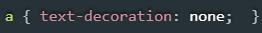

No CSS é onde você vai dar todo o estilo ao seu projeto.
Color
Altera a cor de primeiro plano de um texto
Font
Altera a fonte
Font size
Altera o tamanho da fonte
Text decoration
Usado para remover o sublinhado de links que o próprio navegador coloca, ou colocar uma decoração diferente 
Text shadow
Adicionar sombra no texto
Text align
Para alinhar o texto, onde quiser